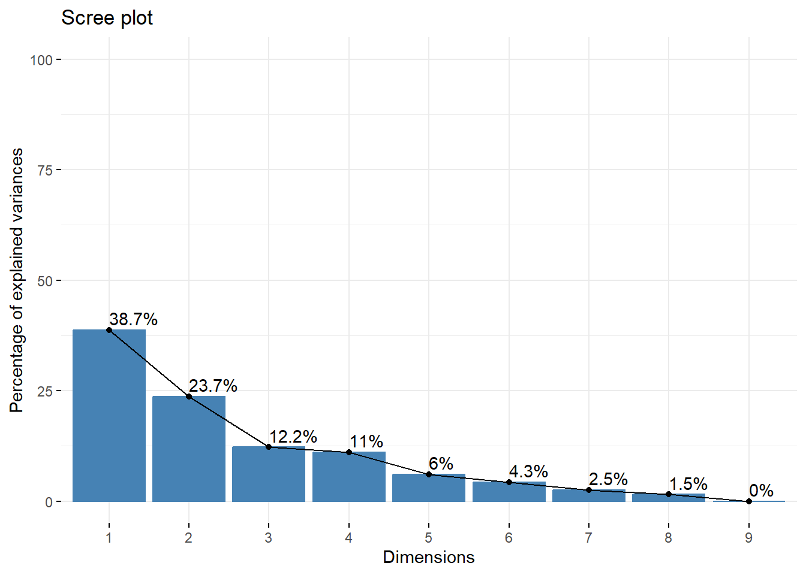
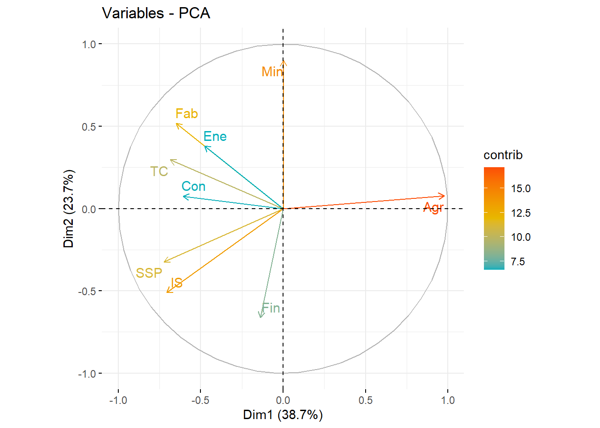
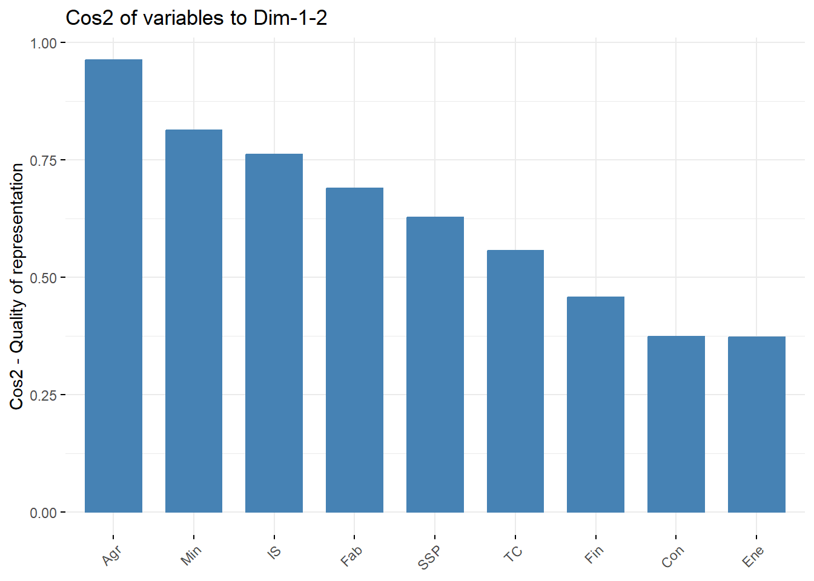
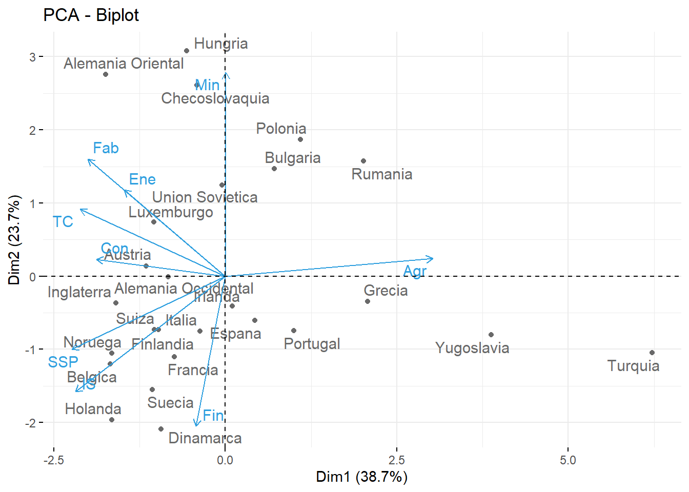
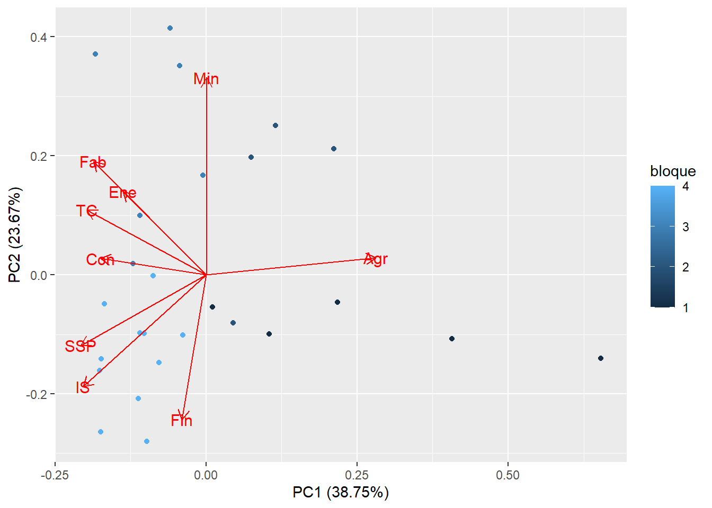

Considera los datos europa.dat que están disponibles en Aula Digital. Los datos corresponden a los porcentajes de población empleados en diferentes actividades económicas en Europa para el año 1979. Las variables consideradas son: Agricultura, Minas, Fábricas, Suministro Eléctrico, Construcción, Industrias de Servicio, Finanzas, Servicios Sociales y Personales y, Transporte y Comunicaciones.
Utiliza el método de componentes principales para reducir el número de variables, y tratar de determinar grupos de países con comportamientos semejantes en la distribución de su fuerza de trabajo. En este caso, usa la matriz de covarianza para el cálculo de las componentes principales, ya que todos los datos están medidos en la misma escala (porcentaje de la población) y por las caractersticas de los datos, no parece una buena idea considerarlos todos de igual manera.
The following objects are masked from 'package:stats':
filter, lag
The following objects are masked from 'package:base':
intersect, setdiff, setequal, union
── Attaching core tidyverse packages ──────────────────────── tidyverse 2.0.0 ──
✔ lubridate 1.9.2 ✔ readr 2.1.4
── Conflicts ────────────────────────────────────────── tidyverse_conflicts() ──
✖ dplyr::filter() masks stats::filter()
✖ dplyr::lag() masks stats::lag()
ℹ Use the conflicted package (<http://conflicted.r-lib.org/>) to force all conflicts to become errors
Welcome! Want to learn more? See two factoextra-related books at https://goo.gl/ve3WBa
Cargamos la tabla de datos:
datos<-read.table("europa (1).dat")head(datos)
Agr Min Fab Ene Con IS Fin SSP TC
Belgica 3.3 0.9 27.6 0.9 8.2 19.1 6.2 26.6 7.2
Dinamarca 9.2 0.1 21.8 0.6 8.3 14.6 6.5 32.2 7.1
Francia 10.8 0.8 27.5 0.9 8.9 16.8 6.0 22.6 5.7
Alemania Occidental 6.7 1.3 35.8 0.9 7.3 14.4 5.0 22.3 6.1
Irlanda 23.2 1.0 20.7 1.3 7.5 16.8 2.8 20.8 6.1
Italia 15.9 0.6 27.6 0.5 10.0 18.1 1.6 20.1 5.7
Primero, calculamos la matriz de covarianza para ver si los datos estan relacionados.
cov(datos)
Agr Min Fab Ene Con IS
Agr 241.6958154 0.53987692 -73.113846 -2.33984615 -13.77209231 -52.4210462
Min 0.5398769 0.94098462 3.026369 0.14796923 -0.04086154 -1.7600308
Fab -73.1138462 3.02636923 49.108738 1.01593846 5.70227692 6.5351385
Ene -2.3398462 0.14796923 1.015938 0.14153846 0.03707692 0.3475385
Con -13.7720923 -0.04086154 5.702277 0.03707692 2.70795385 2.6804769
IS -52.4210462 -1.76003077 6.535138 0.34753846 2.68047692 20.9329385
Fin -9.5920000 -1.20520000 -3.064800 0.11600000 0.07520000 4.6940000
SSP -79.2911385 -1.86169231 7.378615 0.34021538 1.77843077 17.8786154
TC -12.2206769 0.21141538 3.419631 0.19643077 0.88766154 1.1940308
Fin SSP TC
Agr -9.5920 -79.2911385 -12.2206769
Min -1.2052 -1.8616923 0.2114154
Fab -3.0648 7.3786154 3.4196308
Ene 0.1160 0.3402154 0.1964308
Con 0.0752 1.7784308 0.8876615
IS 4.6940 17.8786154 1.1940308
Fin 7.8768 2.0632000 -0.9604000
SSP 2.0632 46.6426462 5.3964923
TC -0.9604 5.3964923 1.9361846
Notemos que, en general, las variables tienen covarianza alejada de 0. Cabe destacar que la Agricultura tiene una varianza muy alta. Por tanto, calculamos las componentes principales:
Calculamos componentes de los datos:
datos.acp =prcomp(datos, scale =TRUE)
Estudiemos con que coponentes vamos a trabaja en el análisis posterior de estos datos.
Notemos que las tres primeras componentes suman más del 60% de la varianza.


Del círculo de correlación variable, podemos notar que correlaciones positivas y negativas, según su agrupación por cuadrantes, pero para ver la calidad de la representación de las variables usaremos cos2:

En este gráfico, vemos que Agr es la variable mejor representada por la componente principal. A esta le siguen Min e IS. Vemos que Ene no está perfectamente representada por la PC.
Para ver como se relacionan las componentes principales con los datos originales, veamos los autovectores:
datos.acp$rotation
PC1 PC2 PC3 PC4 PC5 PC6
Agr 0.523790989 0.05359389 0.04867439 -0.02879285 0.2127026 0.1533066
Min 0.001323458 0.61780714 -0.20110021 -0.06408495 -0.1637431 -0.1005897
Fab -0.347495131 0.35505360 -0.15046308 0.34608821 -0.3849576 -0.2881523
Ene -0.255716182 0.26109606 -0.56108325 -0.39330897 0.2951715 0.3572641
Con -0.325179319 0.05128845 0.15332114 0.66832395 0.4715934 0.1303542
IS -0.378919663 -0.35017206 -0.11509551 0.05015651 -0.2835681 0.6148287
Fin -0.074373583 -0.45369785 -0.58736130 0.05156652 0.2795682 -0.5255581
SSP -0.387408806 -0.22152120 0.31190350 -0.41223019 -0.2203514 -0.2629097
TC -0.366822713 0.20259185 0.37510601 -0.31437188 0.5129356 -0.1239760
PC7 PC8 PC9
Agr 0.02132116 0.007922069 0.80641788
Min -0.72571894 0.088362816 0.04856307
Fab 0.47936298 0.125818308 0.36595728
Ene 0.25564699 -0.341228167 0.01938500
Con -0.22069499 -0.355733906 0.08257219
IS -0.22943536 0.387536806 0.23829861
Fin -0.18745525 0.174329338 0.14517064
SSP -0.19130212 -0.506154178 0.35094226
TC 0.06819331 0.544562381 0.07205520
La primera componente principal da bastante peso a Agricultura y da aproximadamente el mismo peso a Fábricas, Suministro Eléctrico, Construcción, Industrias de Servicio, Servicios Sociales y Personales y, Transporte y Comunicaciones con signo contrario a Agricultura.
La segunda componente principal da aproximadamente el doble de peso a Minas que a Fábrica y da pesos parecidos a Industrias de Servicio, Finanzas, Servicios Sociales y Personales con signo contrario a Minas y las demás.
Ahora, con biplot veremos las observaciones y las variables originales transformadas (en los ejes de las PC):

Las flechas más largas corresponde a Agricultura, Minas y Fábrica, ya que tienen una fuerte influencia sobre la primera componente.
Notemos que la direccion de la flecha de Agricultura indica que el “loading” de esta para la primera componente es positivo. De la misma forma, la direccion de la flecha de Minas indica que el “loading” de esta para la primera componente es negativo.
Los “loadings” de las variables Agricultura y Comunicación con respecto a la segunda componente son muy bajos (las flechas son prácticamente horizontales)
Resultados por variables
Veamos las contribuciones a las CP:
# Resultados por Variablesres.var=get_pca_var(datos.acp)res.var$contrib
Dim.1 Dim.2 Dim.3 Dim.4 Dim.5 Dim.6
Agr 2.743570e+01 0.2872306 0.2369196 0.08290281 4.524241 2.350291
Min 1.751541e-04 38.1685658 4.0441294 0.41068811 2.681179 1.011828
Fab 1.207529e+01 12.6063061 2.2639139 11.97770495 14.819232 8.303172
Ene 6.539077e+00 6.8171152 31.4814413 15.46919447 8.712624 12.763766
Con 1.057416e+01 0.2630505 2.3507371 44.66569074 22.240036 1.699221
IS 1.435801e+01 12.2620474 1.3246976 0.25156754 8.041085 37.801432
Fin 5.531430e-01 20.5841742 34.4993301 0.26591060 7.815837 27.621135
SSP 1.500856e+01 4.9071643 9.7283794 16.99337296 4.855474 6.912149
TC 1.345589e+01 4.1043458 14.0704516 9.88296781 26.310292 1.537006
Dim.7 Dim.8 Dim.9
Agr 0.04545917 0.006275918 65.0309795
Min 52.66679866 0.780798721 0.2358371
Fab 22.97888706 1.583024654 13.3924727
Ene 6.53553859 11.643666204 0.0375778
Con 4.87062784 12.654661209 0.6818167
IS 5.26405839 15.018477616 5.6786225
Fin 3.51394718 3.039071820 2.1074515
SSP 3.65965030 25.619205217 12.3160469
TC 0.46503281 29.654818641 0.5191952
En la tabla anterior, podemos confirmar lo que hemos visto en biplot.
Veamos la calidad de la representación:
res.var$cos2
Dim.1 Dim.2 Dim.3 Dim.4 Dim.5 Dim.6
Agr 9.567244e-01 0.006118508 0.002603646 0.0008244543 0.02457648 0.009011667
Min 6.107889e-06 0.813056538 0.044443268 0.0040842234 0.01456464 0.003879629
Fab 4.210835e-01 0.268536147 0.024879454 0.1191162368 0.08050069 0.031836659
Ene 2.280275e-01 0.145216356 0.345967696 0.1538385058 0.04732852 0.048939811
Con 3.687369e-01 0.005603431 0.025833604 0.4441926914 0.12081182 0.006515282
IS 5.006856e-01 0.261202841 0.014557865 0.0025017964 0.04368060 0.144941150
Fin 1.928893e-02 0.438478551 0.379133014 0.0026444357 0.04245701 0.105907072
SSP 5.233711e-01 0.104531097 0.106910765 0.1689962015 0.02637579 0.026503091
TC 4.692272e-01 0.087429672 0.154628299 0.0982844326 0.14292217 0.005893305
Dim.7 Dim.8 Dim.9
Agr 0.0001026259 8.584824e-06 2.967045e-05
Min 0.1188974338 1.068054e-03 1.076009e-07
Fab 0.0518757694 2.165418e-03 6.110329e-06
Ene 0.0147542434 1.592736e-02 1.714491e-08
Con 0.0109956399 1.731030e-02 3.110796e-07
IS 0.0118838253 2.054376e-02 2.590877e-06
Fin 0.0079328783 4.157144e-03 9.615269e-07
SSP 0.0082618090 3.504449e-02 5.619209e-06
TC 0.0010498304 4.056480e-02 2.368833e-07
Dim.1 Dim.2 Dim.3 Dim.4
Belgica 0.593149451 0.3026307865 0.002670154 0.023365670
Dinamarca 0.119431052 0.5954921708 0.118885209 0.046400088
Francia 0.224786518 0.4962204636 0.097876984 0.098813020
Alemania Occidental 0.238284290 0.0000424304 0.110103259 0.004000742
Irlanda 0.003217054 0.0514679089 0.044292836 0.257873846
Italia 0.025633930 0.1077165203 0.204603508 0.396925101
Dim.5 Dim.6 Dim.7 Dim.8
Belgica 2.135227e-02 0.0004526869 0.0234477329 0.032931008
Dinamarca 1.386221e-03 0.0900220775 0.0120693683 0.016281727
Francia 3.545933e-02 0.0052938628 0.0135796186 0.027970104
Alemania Occidental 4.451169e-01 0.1252477018 0.0647906604 0.012399992
Irlanda 6.957735e-05 0.6091225209 0.0004120706 0.033508643
Italia 7.571413e-02 0.1826575002 0.0036564069 0.003087195
Dim.9
Belgica 2.410428e-07
Dinamarca 3.208591e-05
Francia 1.016380e-07
Alemania Occidental 1.401926e-05
Irlanda 3.554406e-05
Italia 5.707683e-06
Determinación de grupos de países con comportamientos semejantes en la distribución de su fuerza de trabajo:
En primer lugar, notemos que Turquía es un outlier con respecto a la distribución de su fuerza de trabajo, ya que vemos que su comportamiento es muy distinto al resto de países: es un país prácticamente agrícola i que donde no encontramos grandes explotaciones de minería. Podemos considerar que Yugoslavia se encuentra en el mismo grupo que Turquía, ya que también en comparación con el resto su economía se basa en l’agricultura y no tanto en la minería. En este grupo también añadiremos países agricultores que no explotan minas: Irlanda, Grecia, Portugal, Espana.
Un segundo grupo podría formarse a partir de los países que vemos que trabajan tanto la minería como la agricultura: Polonia, Bulgaria, Rumanía.
El siguiente grupo a considerar serían aquellos que su economía se basa en la explotación minera: Hungría, Alemania Oriental, Checoslovaquia, Unión Soviética, Austria y Luxemburgo.
En último lugar, podemos considerar un grupo formado por los países que no trabajan ni las minas: Inglaterra, Alemania Occidental, Noruega, Suiza, Italia, Finlandia, Francia, Belgica, Suecia, Holanda, Dinamarca.
Agrupemoslos y veamos como queda el gráfico.
Warning: package 'ggfortify' was built under R version 4.3.2

PCA alternativo
Como hemos visto anteriormente, Turquía representa una gran outlier de nuestro conjunto de datos. Estudiemos si el PCA cambia si eliminamos esta observación: